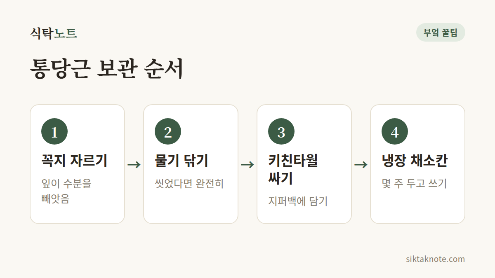

당근 오래 보관하는 법 — 통당근, 썬 당근, 냉동 보관

3줄 요약
- 당근은 꼭지(잎 쪽)를 잘라내고 키친타월에 싸서 지퍼백에 담아 냉장해요.
- 썰어 둔 당근은 물을 담은 밀폐 용기에 넣어 냉장하고, 물은 자주 갈아 줘요.
- 오래 두려면 데치거나 볶아서 냉동해요. 생으로 얼리면 식감이 물러져요.

당근은 오래 가는 편이지만, 보관을 잘못하면 금방 흐물거리거나 곰팡이가 펴요. 통으로 두는지 썰어 두는지에 따라 방법이 조금 달라요.
통당근은 꼭지부터 정리해요
- 잎이 달린 당근이라면 꼭지 부분을 잘라내요. 잎이 당근의 수분을 빼앗아 가거든요.
- 흙이 묻은 당근은 흙을 털고, 씻었다면 물기를 완전히 닦아요.
- 키친타월로 감싸 지퍼백에 담아요. 입구는 살짝 열어 두는 게 좋아요.
- 냉장고 채소칸에 세워서 두세요. 몇 주는 두고 쓸 수 있어요.
흙이 묻은 흙당근은 씻지 않고 신문지로 싸서 서늘한 곳에 두는 방법도 있어요. 날이 선선한 계절에 잘 맞아요.

꼭지와 물기, 이 두 가지가 핵심이에요
당근은 뿌리채소지만 수분이 많아서, 잎이 달려 있으면 잎이 수분을 가져가 푸석해져요. 또 물기가 남은 채 밀폐하면 표면이 미끈거리고 곰팡이가 생기고요. 그래서 꼭지를 자르고 물기를 없애는 두 가지가 보관의 중심이에요.

썰어 둔 당근은 물에 담가 둬요
- 밀폐 용기에 당근 조각을 담고, 잠길 만큼 찬물을 부어요.
- 뚜껑을 덮어 냉장고에 두세요.
- 물은 며칠에 한 번 갈아 주세요. 물이 탁해지면 바로 바꾸고요.
쓸 때는 건져서 물기를 닦으면 돼요. 이렇게 하면 아삭함이 오래 가요.
오래 두려면 익혀서 냉동
- 먹기 좋게 썰어요.
- 끓는 물에 1~2분 살짝 데치거나 팬에 볶아요.
- 식힌 뒤 물기를 빼고 지퍼백에 납작하게 담아 냉동해요.
- 쓸 때는 해동 없이 볶음밥, 국, 카레에 바로 넣어요.
생으로 얼리면 해동할 때 식감이 물러지고 물이 많이 나와요. 그래서 익혀서 얼리는 쪽이 편해요.
이런 당근은 먹어도 되고, 이런 당근은 버려요
껍질이 하얗게 말라 보이는 건 표면이 건조해진 경우가 많아요. 이럴 땐 씻거나 껍질을 벗기면 먹을 수 있어요.
하지만 만졌을 때 흐물흐물하거나 끈적이고 곰팡이가 펴 있다면 버리세요. 시큼하거나 이상한 냄새가 나는 당근도 먹지 마세요.
이대로만 두면 당근이 흐물거려서 아깝게 버리는 일이 줄어들 거예요.